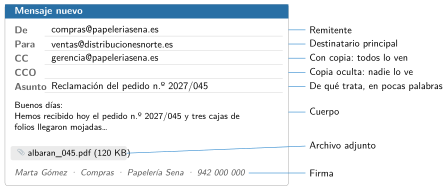

El correo electrónico: elementos y cuentas
Criterios: 8a, 8b, 8c
🤔 Pienso10 min
Qué hago aquí: Piensa un momento y contesta con lo que ya sabes. No pasa nada si no lo sabes: es para empezar.
Escribe el asunto que pondrías a un correo para pedir a un proveedor 20 cajas de folios para el viernes.
📖 Leo y aprendo40 min
Qué hago aquí: Lee despacio, mira los dibujos y los ejemplos, y quédate con la idea clave del final.
Una dirección de correo tiene dos partes separadas por la arroba: usuario@dominio. Por ejemplo, pedidos@papeleriasena.es: el usuario es pedidos y el dominio, papeleriasena.es.

Un correo profesional tiene un asunto claro, un saludo («Buenos días, Sr. Ruiz:»), un cuerpo breve y ordenado (un párrafo por idea), una despedida («Un saludo,») y una firma con nombre, cargo, empresa y teléfono. La firma se configura en Archivo › Opciones › Correo › Firmas.
✏️ Hago120 min
Qué hago aquí: Haz las actividades en orden. Empieza siempre por las básicas.
¿Dónde pones cada dirección? a) el proveedor al que reclamas; b) tu jefa, para que esté informada; c) 50 clientes a los que avisas de un cambio de horario.
Configura en Outlook la cuenta de correo del centro (o explica los pasos con capturas). ¿Es POP, IMAP o Exchange?
Crea tu firma profesional con el nombre, el cargo, la empresa, el teléfono y el logo, con los colores corporativos (trabajo final, tarea 13).
Escribe un correo para reclamar un pedido recibido en mal estado (trabajo final, tarea 12): asunto, saludo, qué pasó, qué pides, despedida y firma. Adjunta una foto del daño. Haz una captura del correo.
Corrige este correo: asunto: (vacío). «hola!! te mando lo q me pediste. un beso» enviado a un cliente con una factura adjunta.
🚀 Amplío (si quieres saber más)
Qué hago aquí: ¿Has terminado? Lee la curiosidad o elige el reto. Es voluntario.
Investiga para qué sirven las opciones Solicitar confirmación de lectura, Retrasar entrega y Recuperar este mensaje de Outlook.
✅ Compruebo10 min
Qué hago aquí: Contesta sin mirar la ficha y marca cómo lo llevas.